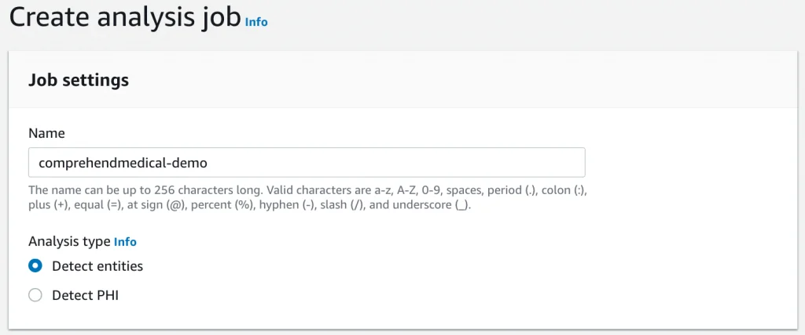
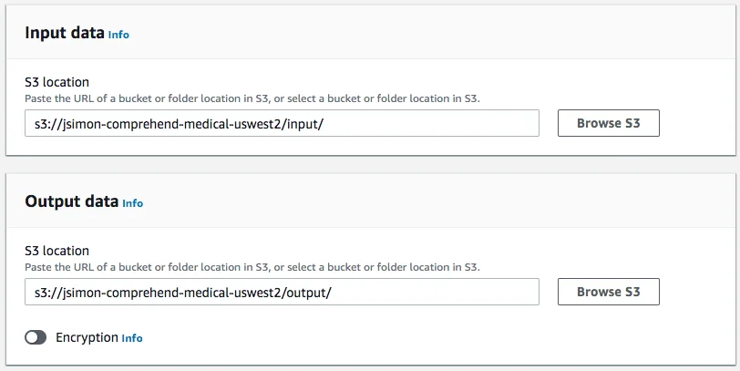

Published: 2019-09-24 | Originally published at AWS Blog
Launched at AWS re:Invent 2018, Amazon Comprehend Medical is a HIPAA-eligible natural language processing service that makes it easy to use machine learning to extract relevant medical information from unstructured text.
For example, customers like Roche Diagnostics and The Fred Hutchinson Cancer Research Center can quickly and accurately extract information , such as medical condition, medication, dosage, strength, and frequency from a variety of sources like doctors’ notes, clinical trial reports, and patient health records. They can also identify protected health information (PHI) present in these documents in order to anonymize it before data exchange.
In a previous blog post , I showed you how to use the Amazon Comprehend Medical API to extract entities and detect PHI in a single document. Today we’re happy to announce that this API can now process batches of documents stored in an Amazon Simple Storage Service (Amazon S3) bucket. Let’s do a demo!
Introducing the Batch Mode API
First, we need to grab some data to test batch mode:
MT Samples
is a great collection of real-life anonymized medical transcripts that are free to use and distribute. I picked a few transcripts, and converted them to the simple JSON format that Amazon Comprehend Medical expects: in a production workflow, converting documents to this format could easily be done by your application code, or by one of our analytics services such as
AWS Glue
.
{"Text": " VITAL SIGNS: The patient was afebrile. He is slightly tachycardic, 105,
but stable blood pressure and respiratory rate.GENERAL: The patient is in no distress.
Sitting quietly on the gurney. HEENT: Unremarkable. His oral mucosa is moist and well
hydrated. Lips and tongue look normal. Posterior pharynx is clear. NECK: Supple. His
trachea is midline.There is no stridor. LUNGS: Very clear with good breath sounds in
all fields. There is no wheezing. Good air movement in all lung fields.
CARDIAC: Without murmur. Slight tachycardia. ABDOMEN: Soft, nontender.
SKIN: Notable for a confluence erythematous, blanching rash on the torso as well
as more of a blotchy papular, macular rash on the upper arms. He noted some on his
buttocks as well. Remaining of the exam is unremarkable.}
Then, I simply upload the samples to an Amazon S3 bucket located in the same region as the service… and yes, ‘esophagogastroduodenoscopy’ is a word.
Now let’s head to the AWS console and create a entity detection job. The rest of the process would be identical for PHI.

Samples are stored under the ‘
input
/’ prefix, and I’m expecting results under the ‘
output
/’ prefix. Of course, you could use different buckets if you were so inclined. Optionally, you could also use
AWS Key Management Service (AWS KMS)
to encrypt output results. For the sake of brevity, I won’t
set up KMS
here, but you’d certainly want to consider it for production workflows.

I also need to provide a data access role in AWS Identity and Access Management (IAM) , allowing Amazon Comprehend Medical to access the relevant S3 bucket(s). You can use a role that you previously set up in AWS Identity and Access Management (IAM) , or you can use the wizard in the Amazon Comprehend Medical console. For detailed information on permissions, please refer to the documentation .
Then, I create the batch job, and wait for it to complete. After a few minutes, the job is done.
Results are available at the output location: one output for each input, containing a JSON-formatted description of entities and their relationships.
A manifest also includes global information: number of processed documents, total amount of data, etc. Paths are edited out for clarity.
{
"Summary" : {
"Status" : "COMPLETED",
"JobType" : "EntitiesDetection",
"InputDataConfiguration" : {
"Bucket" : "jsimon-comprehend-medical-uswest2",
"Path" : "input/"
},
"OutputDataConfiguration" : {
"Bucket" : "jsimon-comprehend-medical-uswest2",
"Path" : ...
},
"InputFileCount" : 4,
"TotalMeteredCharacters" : 3636,
"UnprocessedFilesCount" : 0,
"SuccessfulFilesCount" : 4,
"TotalDurationSeconds" : 366,
"SuccessfulFilesListLocation" : ... ,
"UnprocessedFilesListLocation" : ...
}
}
After retrieving the ‘ rash.json.out ‘ object from S3, I can use a JSON editor to view its contents. Here are some of the entities that have been detected.
Of course, this data is not meant to be read by humans. In a production workflow, it would be processed automatically by the Amazon Comprehend Medical APIs . Results would then stored in an AWS backend, and made available to healthcare professionals through a business application.
Now Available!
As you can see, it’s extremely easy to use
Amazon Comprehend Medical
in batch mode, even at very large scale. Zero machine learning work and zero infrastructure work required!
The service is available today in the following AWS regions:
The free tier covers 25,000 units of text (2.5 million characters) for the first three months when you start using the service, either with entity extraction or with PHI detection.
As always, we’d love to hear your feedback: please post it to the AWS forum for Amazon Comprehend, or send it through your usual AWS contacts.
Julien is the Artificial Intelligence & Machine Learning Evangelist for EMEA . He focuses on helping developers and enterprises bring their ideas to life. In his spare time, he reads the works of JRR Tolkien again and again.
{kind=link}
{kind=link}
{kind=link}
{kind=link}
{kind=link}
{kind=link}